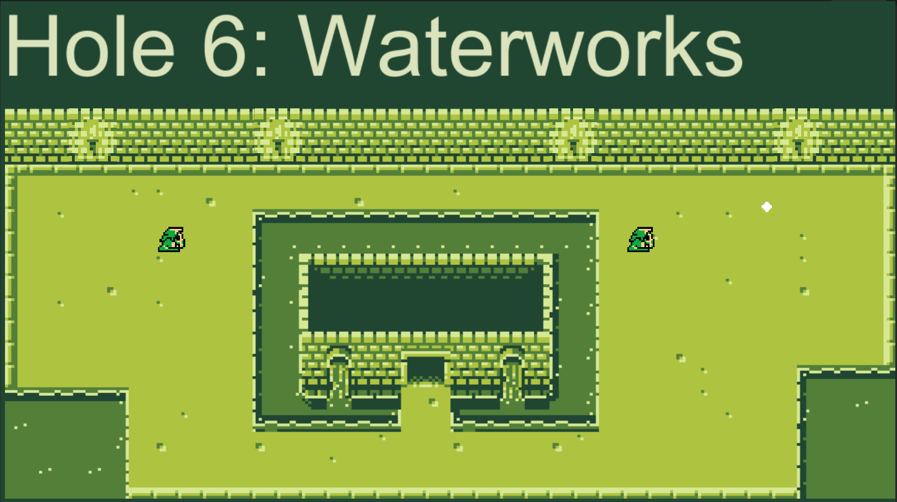

BC Game Jam 2017 10/2/2017
This was my teams entry for BC Game Jam 2017. Developed in 48 hours with the theme of "Dimensions".
I was very confident and proud of this game jam. We had a large team of 10 and we follow an organization structure that I suggested. Everyone knew what they were working on and where the project was at. I've kept working on this so that all the team members will have a finished piece on their portfolio they can be proud of.
BC Game Jam 2018 07/2/2018
This was my teams entry for BC Game Jam 2018. Developed in 48 hours with the theme of "Resolution". My focus was on the menus and learning the unity GUI system.
I feel that out of all the games I have worked on I learnt the most from this one due to alot of the difficulties the team and I experienced. Once again I had a large team but this time we had a caustic team member. They arrived late and didn't seem to really like the project the rest of us had been willing to commit to. They were mad about the situation and would just demand the rest of the team comply with what they needed opposed to talking with the team on where things where at. Our team was also too big for the project which lead to alot of unoptimized development. In the future I plan to have a team of max 5, have an artist going in, and constricting to one or two extra themes as the inclusion of them all diluted the games focus.
Putter Dungeon Current
This was a personal project that I had started in late 2016. I stopped development for a while due to hardware failure but given what I learned in the BC Game Jam I will revamp and complete the game.
I came up with the idea based on a tilemap I found on Itch.io and figured I didn't have experience with tilemaps in unity so I wanted to make a game with it.The goal was to make something different and focus on the levels so I decided to make a mini golf game.
Global Game Jam 2016 24/1/2016
This was my teams entry for the Global Game Jam 2016. Developed in 48 hours with the theme of "Ritual".
My first Game Jam, as our team was comprised of entirely programmers so I had some experience in 3D modeling so I offered to be the artist for the game. As the theme was ritual our idea was shooting specific ships in order so I designed different ships with a general shape to be repeated. I was also new to animation but stuck to it and am happy with how much of it turned out. As the jam went on I realized I was mostly done the art assets so I started to make music for the game. I had never done any audio design of any kind before so I am happy with what I was able to in 8 hours with self teaching
Charity Website Current

Throughout university I had planned and executed several charity livestreams. I held one during the summer of 2017 and was looking to setup a template for a website that others can use to host their own. I am currently setting up the site to look better and have adaptable design. In making this portoflio website I taught myself foundation which I will apply to this project. In addition to making a template for others to use I am looking to make a series of tutorials that will allow others to learn some web design and be able to effectively modify the template for their use. For hosting their site I will cover useing github for hosting.